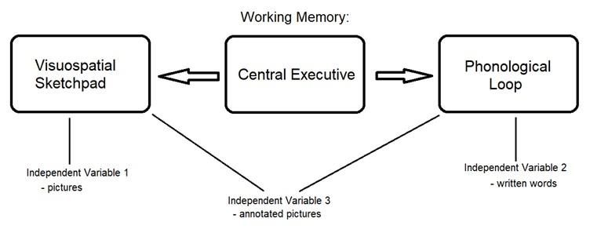
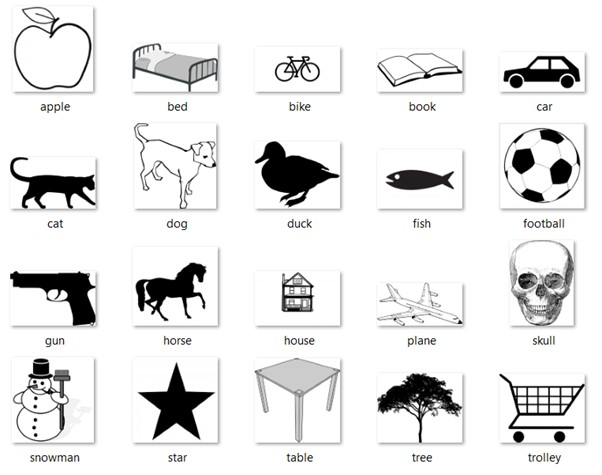

The experiment was a group project for the course Human Cognition
in Human-Computer-Interaction, held by Robert Ramberg, at the Stockholm University
Department of Computer and System Sciences
during the autumn semester 2019, by Sebastian Veuskens,
Thomas Castro, Thibaud Marchand and Lena Spitz
 In this day and age, the digitized and multimedia world produces an enormous amount of visual information each second that has to be processed and memorized by humans. Therefore, many aspects of our daily life depend on the capacity of human memory, making it a broad research field with many subfields of interest. One of these subfields is short-term memory - a limited storage for information which will be forgotten as new information comes in, unless the information is rehearsed, repeated or processed in depth with high concentration. The following study investigates the effectiveness of different processes within this short-term memory.
In this day and age, the digitized and multimedia world produces an enormous amount of visual information each second that has to be processed and memorized by humans. Therefore, many aspects of our daily life depend on the capacity of human memory, making it a broad research field with many subfields of interest. One of these subfields is short-term memory - a limited storage for information which will be forgotten as new information comes in, unless the information is rehearsed, repeated or processed in depth with high concentration. The following study investigates the effectiveness of different processes within this short-term memory.
Content
"Learn from yesterday, live for today, hope for tomorrow. The important thing is not to stop questioning."Albert Einstein
Theoretical Background
In 1986 the british psychologist Alan Baddeley developed a theory about working memory. It consists of a central executive that controls two slave systems: the visuospatial sketchpad and the phonological loop. The visuospatial sketchpad refers to visually remembering information, meaning having a picture of the information in the mind. The phonological loop refers to an inner voice, the articulatory loop, that repeats information to oneself in the mind which can be heard, processed and stored by an inner ear, the phonological store.

Experiments by Baddeley, Thomson and Buchanan in 1975 and Vallar and Baddeley in 1982 provided evidence for the phonological loop, as participants could remember more short words than long words at a time. Length of a word was measured by the number of syllables. The amount of words remembered strongly correlated with the amount of syllables participants were able to say in a certain amount of seconds. According to Baddeley, humans can thus keep information worth 1.5 to 2 seconds in the working memory.
The distinction between short-term and working memory is often imprecise since these memory types are based on different theoretical concepts and are supposed to overlap each other to a large extent. The two are hard to differentiate, but ultimately working memory is meant to keep information readily available to perform a task, and not to process the information in order to commit it to long-term memory.
The use of multimedia over single media intuitively leads to the assumption that it encourages more ways of engaging with the presented material, thus enabling deeper processing and therefore heightening memory performance. However, studies have so far not found evidence that this is the case. Our approach focuses on the ability to process information in a limited period of time. Furthermore we reached a higher level of comparableness since the same information was presented both in picture form and in written word form.
In total, 30 individuals were tested. Each individual was shown a set of items, presented either as pictures, words, or pictures and words combined. The amount of remembered words functioned as an indicator that reported how much the different types of presentation facilitate the capacity of human memory. The experimental design consisted of the following variables:
Design
| Variable |
Measure |
| Dependent variable |
Working memory corrisponding to the number or correctly/incorrectly/not remembered items |
| Independent variable |
Presentation of items either as pictures, written words or annotated pictures |
| Control variables |
- Minimum English level B1
- Items always in the same order, regardless of presentation
- Items are sequentially displayed for a set amount of time (2 seconds)
- Items are presented in the same size in the same way in a controlled environment
|
Our experiment was structured into three different types of presentations, namely presentation of words, pictures or pictures and words combined. We chose a Between Subject Design, meaning each participant was part of one group assigned to one value of the active independent variable. Thus, everyone had to memorize the same items (control variable) and there was no learning effect as would occur if each participant had been presented with all three different values of the independent variable in a within subject design. The final 20 items used for the experiment are illustrated below.

Results
In the final experimental study 30 participants took part, ten for each independent variable.Slightly more than half of our participants were in age group 18-22, while one third was in age group 23-26. Two participants were in age group 27-31 and one was in age group 31-35. With 17 female and 13 male participants the results should be fairly unbiased in regards to gender. All participants understood the instructions, consented to taking part in the experiment and voluntarily gave us their results of the experiment to evaluate.
Overall participants correctly remembered between 6 and 18 items with a total average of 11.73. Below a comprehensive record of the results.
| Measure |
Minimum # of remembered items |
Maximum # of remembered items |
Average |
Average (minimum and maximum excluded) |
Median |
Variance |
Standard deviation |
| Total |
6 |
18 |
11.73 |
11.68 |
11.5 |
9.72> |
3.12 |
| Pictures |
7 |
15 |
11.8 |
12 |
13 |
7.96 |
2.82 |
| Annotated pictures |
6 |
17 |
11.4 |
11.38 |
10 |
13.6 |
3.69 |
| Written words |
9 |
18 |
12 |
11.63 |
11.5 |
9.56 |
3.09 |
Participants presented with annotated pictures overall remembered the least amount of items, with an average of 11.4 and a median of 10. Depending on which statistic measure is taken into account, pictures performed better than written words with a median of 13 compared to a median of 11.5, while the average number of correctly remembered items of words is 12 and the average of pictures is 11.8. According to the relatively high variance in comparison to the average, a reliable result would require a lot more participants, especially since our subjects were chosen and assigned to the independent variable values randomly and not by matching.
The English level of participants seemed to have a big influence on the result. On average, participants with a higher level of English also remembered a higher number of items correctly, regardless of how the items were presented. 53% of participants had a English level of C1 and remembered 12.19 items correctly, while the 40% with an English level of B2 correctly remembered 11.25 items. The remaining 7% of participants with a B1 English level recalled 11 items correctly on average. The Histogram in Figure 3 illustrates the difference, showing that people who had a higher English level remembered higher amounts of items more frequently than lower levels.
When asked, 70% of all participants confirmed they used the phonological loop to remember the items, and 76,6% used the visuospatial sketchpad at least partially. Yet when looking at the different variables, only half of the participants presented with words indicated that they used the phonological loop, while 70% of participants presented with annotated pictures and 90% of participants presented only with pictures said they did repeat the names of the items in their mind to memorize them. 60% of participants presented with written words said they imagined the items visually in their mind. For participants who were presented with either just pictures or annotated pictures it was 90%.
In the open question we asked participants to explain how they tried to remember the items. Six participants noted that they were trying to come up with a story that included all the items. These participants remembered a much higher number of items on average, it being 14.67 items, while all other participants had an average of 11 items. 13 participants categorized the items or remembered them via associating them with each other or personal feelings about them. Three participants repeated the items in their mind in sequence, though some noted that it quickly became too many items to do this. A few single notes included remembering the first letters of the items, concentrating really hard with their eyes closed or writing the last items down first. One participant who was presented with annotated pictures said they remembered more image details than the text. Six participants specifically mentioned that they remembered the items as “images in [their] head[s]”, though half of these participants were presented with written words and not with pictures. Five participants explicitly noted that they repeated the words in their mind.
Discussion
Contrary to our hypothesis, both the average and median amount of remembered words was smallest for the group shown annotated pictures and highest for the group shown only words. However, removing the extreme cases (the minimum and maximum amount of remembered words) influences the order of the average of remembered words towards the presentation consisting of only pictures. As a consequence it is hard to categorize if either presentations consisting only words or only pictures result in a higher capacity.
Although the experimental study we conducted does not precisely quantify the capacity of the different types of memory systems (phonological and visual sketchpad) and there might be slight changes, our results suggest that multimedia contents are not necessarily superior to single media usage in facilitating the capacity of information. Therefore, our results support common reviews that point out that there is no evidence that a multimedia approach has advantages for learning or memory performance. Instead, any advantages that have been found in past studies could be explained by other surrounding factors unrelated to the multimedia presentation.
An interesting aspect of our results is the distribution of methods used by the participants to remember the items. Contrary to our previous expectations, the most frequent use of the phonological loop seemed to occur in the group shown only pictures and the least use seemed to occur in the group only shown words, as described in our results. Since the phonological loop and the visual sketchpad are very complex and their mechanisms are still subject of modern investigations, we do not have the possibility to verify the answers of the participants regarding their used type of memory. However, this might support research results that indicate that written words are not necessarily bound to the phonological loop but can also be processed in the visual sketchpad of working memory.
People who wrote they created a story in their mind performed significantly better than the rest. This indicates that learning methodology influenced the amount of items participants could remember. Embedding a list of items into a meaningful context also helped people to remember. This is in accordance with Anderson and a study by McAninch, Austin and Derks where participants remembered more nonsense pictures that had a humorous caption than pictures with a descriptive one. This shows that processing information on a deeper level (like finding it funny, or making up a story) facilitates memory performance.
Furthermore the same study provides an explanation why the group with annotated pictures performed worse than the group shown either pictures or words only. Our participants tended to give back the exact same words which they saw during the presentation, even if they wouldn't have used those exact words to describe the presented pictures. “The condition with no captions benefitted from the subject’s freedom to develop their own mnemonics”. Therefore, Austin's and Derks' findings are consistent with our results, because the presentations with only words or pictures left more space to create some meaningful context for each participant.
When evaluating the results, it turned out that the average English level of the participants that were shown the annotated pictures was lower than the English level of the two other groups. Therefore the relatively poor performance of the group that was shown the annotated pictures could to some extent be caused by coincidentally lower English level. Conducting the experimental study to participants with their mother tongue equal to the language of the experimental study would eliminate the influence of processing information in a foreign language.
Limitations
| Limitation |
Improvement |
Explanation |
| The quantitative differenced in the discussion are statistically not significant |
Conduct the same experimental study with a much larger number of participants |
A greater sample size enables statistical significant discovery of small differences between groups |
| The phonological loop was not frequently used in the written word group |
Additional comparision of auditory and visual presentations |
Helps to compare the phonological loop and the visual sketchpad more precisely |
Conclusion
We conducted an experimental study about the working memory’s performance in regards to remembering pictures, written words and annotated pictures. 30 participants took part in the study, ten for each type of presentation. While all groups performed similarly, the picture and word groups tied for the first place based on the statistical value chosen for evaluation. The group exposed to annotated pictures performed the worst, despite the intuitive assumption that multimedia presentation would make items easier to remember.
However, these results are congruent with those of other studies that indicate that multimedia presentations take away the freedom to form an individual way of processing what is presented. The importance of processing information rather than just registering it also showed itself in the significantly higher performance of participants who remembered items by combining them in a story in their minds, rather than just trying to remember the items on their own.
Another influence factor was the English level of the participants. Both that and the strategy for remembering items would be valuable additional control variables for further studies.
Get In Touch
You can reach me via email or LinkedIn message. I am excited to get in touch with you and I am always open for interesting projects or innovate ideas!